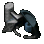
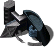
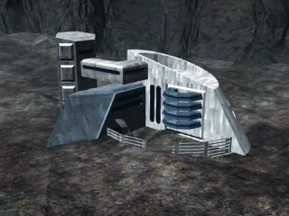

Завод



Уровень 1 (базовое здание)
- Энергии треб.:
- 1300
- Энергия (HP):
- 3750
- Макс. число рабочих:
- 120?
- Время постройки:
- 36 с?
Затраты: Экстракт 2000 Железо 1300 Уголь 1000 Титан 800
Улучшение 1: Завод
Требуется исследование: Мод. завода

- Энергии треб.:
- 1300
- Энергия (HP):
- 3750
- Макс. число рабочих:
- 120?
- Время постройки:
- 72 с?
Затраты: Экстракт 2200 Железо 1300 Уголь 800 Титан 750
Параметры конфигурации, которых нет в игре (9)
SIGHT- 4
BUILDER- 120
TRACE- 2
HEIGHT- 1
COMPONENT_QUANT- 1
SPRITE_QUANTITY- 1
TYPE- R_hFABRYKA
AIBLD- AIBLD_HEAVY_FACTORY1
AREA- 1, 1, 0, 0, 0, 0, 0, 0, 0, 0, 1, 1, 0, 0, 0, 0, 0, 0, 0, 0, 1, 1, 0, 0, 0, 0, 0, 0, 0, 0, 0, 0, 0, 0, 0, 0, 0, 0, 0, 0, 0, 0, 0, 0, 0, 0, 0, 0, 0, 0, 0, 0, 0, 0, 0, 0, 0, 0, 0, 0, 0, 0, 0, 0, 0, 0, 0, 0, 0, 0, 0, 0, 0, 0, 0, 0, 0, 0, 0, 0, 0, 0, 0, 0, 0, 0, 0, 0, 0, 0, 0, 0, 0, 0, 0, 0, 0, 0, 0, 0
Описание
Это мощный промышленный комплекс, основанный на ядерной технологии, производящий тяжелые боевые средства и летательные аппараты. После расширения завод может выпускать также легкие вертолеты. Вновь произведенные наземные средства хранятся в гаражах, самолеты - на аэродроме, а вертолеты - на площадках.
Связанное
- Требует
- Пионер, Фабрика, Гараж, Завод, Мод. завода
- Открывает
- Ракетная Башня, Аэродром, Мега-Фабрика, Тяжелый Джип, Сарацин, Тамплиер, Скорпион, X-прим, S.D.P., Мод. завода, Скорпион, X-Прим, S.D.P., Бласт-двигатель, Противоракетная Сист., Щит Титан, Турбина Бротмана, Снаряд Гетера, Ион-ядро, Ракета Волк, Ракета Kондор, Площадка, Атилла, Kомпрессор Хайманна
- Исследуется проектом
- Завод, Мод. завода
- Производит
- Тяжелый Джип (slot 0), X-прим (slot 1), Скорпион (slot 2), S.D.P. (slot 3), Тамплиер (slot 4), Сарацин (slot 5), Атилла (slot 4)
Параметры конфигурации, которых нет в игре (9)
SIGHT- 4
BUILDER- 120
TRACE- 2
HEIGHT- 1
COMPONENT_QUANT- 1
SPRITE_QUANTITY- 1
TYPE- R_hFABRYKA
AIBLD- AIBLD_HEAVY_FACTORY
AREA- 1, 1, 0, 0, 0, 0, 0, 0, 0, 0, 1, 1, 0, 0, 0, 0, 0, 0, 0, 0, 1, 1, 0, 0, 0, 0, 0, 0, 0, 0, 0, 0, 0, 0, 0, 0, 0, 0, 0, 0, 0, 0, 0, 0, 0, 0, 0, 0, 0, 0, 0, 0, 0, 0, 0, 0, 0, 0, 0, 0, 0, 0, 0, 0, 0, 0, 0, 0, 0, 0, 0, 0, 0, 0, 0, 0, 0, 0, 0, 0, 0, 0, 0, 0, 0, 0, 0, 0, 0, 0, 0, 0, 0, 0, 0, 0, 0, 0, 0, 0